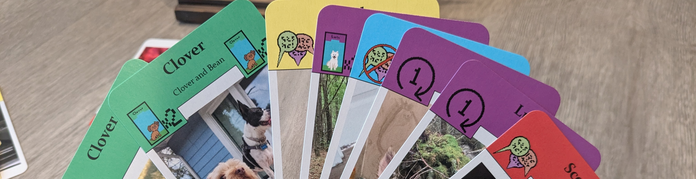
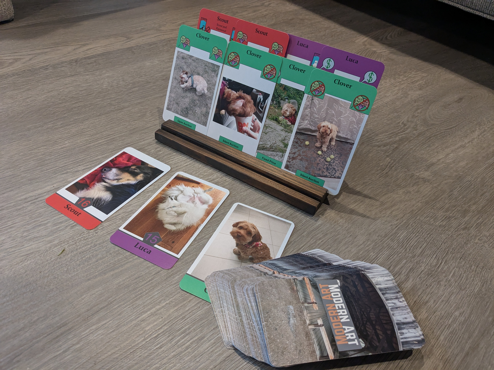

Modern Art Retheme
 In the board game Modern Art, players take turns auctioning off well-known paintings. Wouldn’t it be cuter, though, to haggle over photos of your friends’ pets? I recreated the game so that I could bring you the following answer: yes, it’s much cuter!
I started the project by soliciting pet pictures from my friends for, I assured them, non-nefarious purposes. I also created some pixel art iconography, including sprites of all the participating pets. (As an aside, it turns out a sprite of someone’s pet makes a nice gift!)
I used a card prototyping tool called nanDECK to design the card layout. Once I had gathered all the photos, nanDeck generated PDFs of the cards with a click of a button. With everything set up, I've been able to make multiple versions featuring different pictures and pets. (These also make nice gifts!)
If you would like a deck with your and your friends’ pets, don't hesitate to reach out.